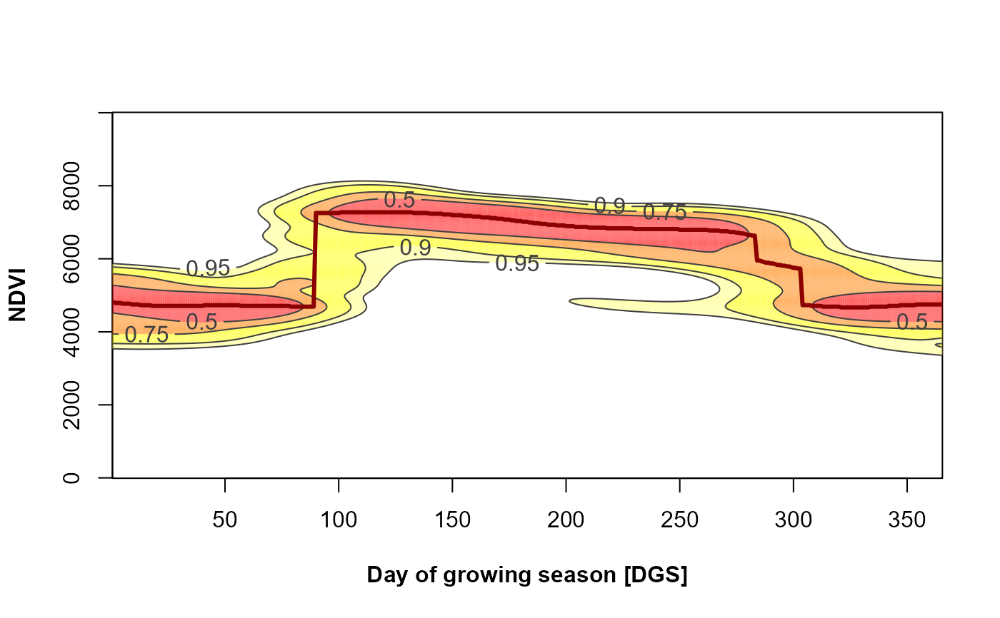
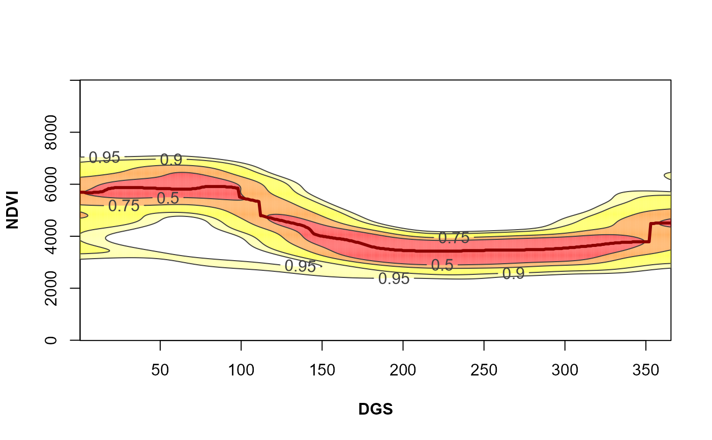
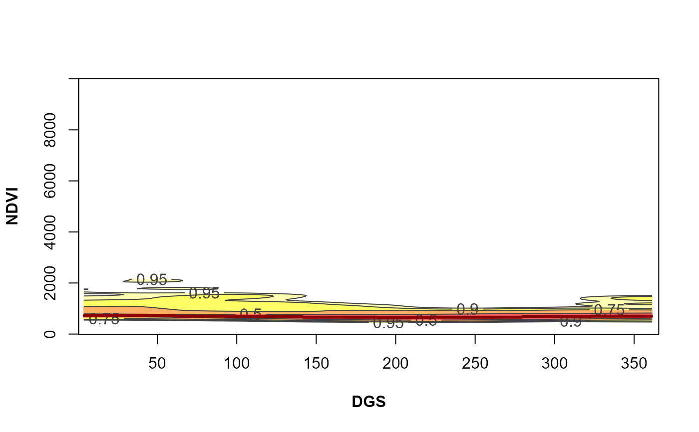
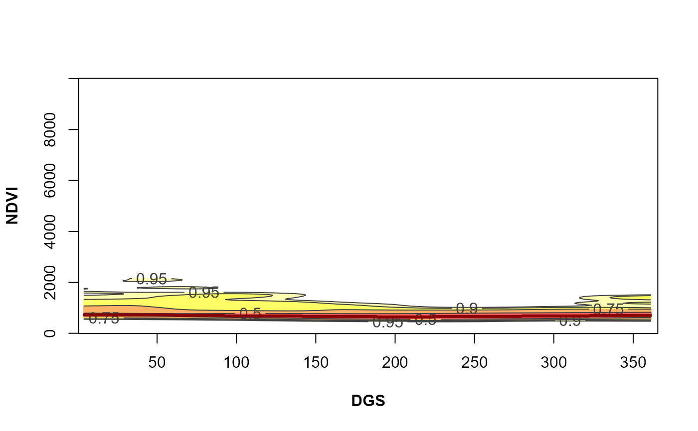

PhenKplot
PhenKplot.RdPlot the most probable vegetation greenness values.
Arguments
- x
Numeric vector. A time series of a vegetation index (e.g. LAI, NDVI, EVI) or any other variable with seasonal behavior. The code has been optimized to work with integer values. Please re-scale the input values if necessary (e.g. NDVI ranging from 0.0000 to 1.0000, multiply by 10,000
- dates
A date vector. The number of dates must be equal to the number of "x" values (numeric input vector).
- h
Numeric. Indicates the geographic hemisphere to define the starting date of the growing season. h=1 if the vegetation is in the Northern Hemisphere (season starting at January 1st), h=2 if it is in the Southern Hemisphere (season starting at July 1st)
- xlab
Character vector (or expression) giving plot title in x axis label
- ylab
Character vector (or expression) giving plot title in y axis label
- rge
Numeric vector with two values setting the minimum and maximum values of the response variable (e.g. NDVI) used in the analysis. We suggest the use of theoretically based limits. For example in the case of MODIS NDVI or EVI, it ranges from 0 to 10,000, so rge =c(0,10000)
Details
It is the graphical version of the Phen function. It calculates and plot a likelihood map of the vegetation-greenness – time space using a numeric vector of vegetation canopy greenness values (e.g. Leaf Area Index (LAI) or greenness proxies values such as the Normalized Difference Vegetation Index (NDVI) or Enhanced Vegetation Index (EVI). Also a vector with dates for the greenness values is required. This function calculates the confidence areas on a per year basis. Functions for confidence intervals on per day basis are under development. This function is partially based on the ci2d function on package gplots.
Examples
# \dontshow{
## Testing function with time series of Nothofagus macrocarpa (NDVI)
# Load data
data("phents")
# PhenKplot for the given data
PhenKplot(x=phents$NDVI,dates=phents$dates,h=2,
xlab = "Day of growing season [DGS]",
ylab = "NDVI",rge=c(0,10000))

# }
# \donttest{
library(lubridate)
## Testing raster data from Central Chile (NDVI), h=2##
# Load data
#RasterStack
data("MegaDrought_stack")
#Dates
data("modis_dates")
# Generate a Raster time series using a raster stack and a date database from Central Chile
# Obtain data from a particular pixel generating a time series
md_pixel <- cellFromXY(MegaDrought_stack,c(313395,6356610))
md_pixelts <- as.numeric(MegaDrought_stack[md_pixel])
plot(modis_dates,md_pixelts, type='l')
# Phenology for the given pixel
PhenKplot(x=md_pixelts,dates=modis_dates,h=2,xlab="DGS", ylab="NDVI", rge=c(0,10000))

## Testing with the Bdesert_stack from the Atacama Desert, Northern Chile (NDVI), h=2 ##
# Load data
#RasterStack
data("Bdesert_stack")
#Dates
data("modis_dates")
# Generate a Raster time series using a raster stack and a date database from Northern Chile
# Obtain data from a particular pixel generating a time series
bd_pixel<-cellFromXY(Bdesert_stack,c(286638,6852107))
bd_pixelts<-as.numeric(Bdesert_stack[bd_pixel])
plot(modis_dates,bd_pixelts, type = 'l')
 # Phenology for the given pixel
PhenKplot(x=bd_pixelts,dates=modis_dates,h=2,xlab = 'DGS',ylab = 'NDVI',rge=c(0,10000))

# }
# Phenology for the given pixel
PhenKplot(x=bd_pixelts,dates=modis_dates,h=2,xlab = 'DGS',ylab = 'NDVI',rge=c(0,10000))

# }